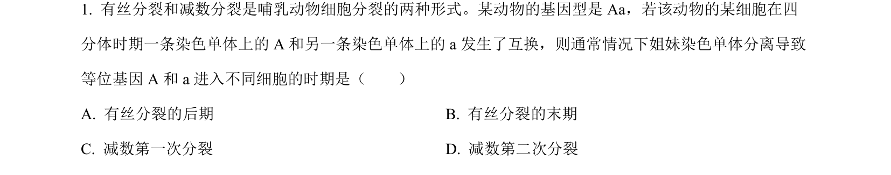
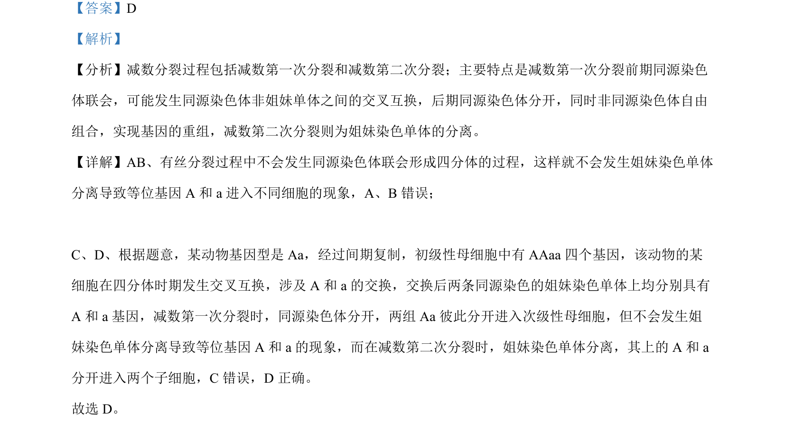

考点：减数分裂 交叉互换 等位基因分离 姐妹染色单体

该题考查减数分裂过程中交叉互换导致等位基因分离的时期判断。

📄 原 PDF 第 1 页：
素材/真题/吉林/2008-2024·（吉林）生物高考真题/2022年高考生物试卷（全国乙卷）（解析卷）.pdf
【答案】D 【解析】 【分析】减数分裂过程包括减数第一次分裂和减数第二次分裂；主要特点是减数第一次分裂前期同源染色 体联会，可能发生同源染色体非姐妹单体之间的交叉互换，后期同源染色体分开，同时非同源染色体自由 组合，实现基因的重组，减数第二次分裂则为姐妹染色单体的分离。 【详解】AB、有丝分裂过程中不会发生同源染色体联会形成四分体的过程，这样就不会发生姐妹染色单体 分离导致等位基因 A 和 a进入不同细胞的现象，A、B错误； C、D、根据题意，某动物基因型是 Aa，经过间期复制，初级性母细胞中有 AAaa四个基因，该动物的某 细胞在四分体时期发生交叉互换，涉及 A 和 a的交换，交换后两条同源染色的姐妹染色单体上均分别具有 A 和 a基因，减数第一次分裂时，同源染色体分开，两组 Aa彼此分开进入次级性母细胞，但不会发生姐 妹染色单体分离导致等位基因 A 和 a的现象，而在减数第二次分裂时，姐妹染色单体分离，其上的 A 和 a 分开进入两个子细胞，C错误，D 正确。 故选 D。